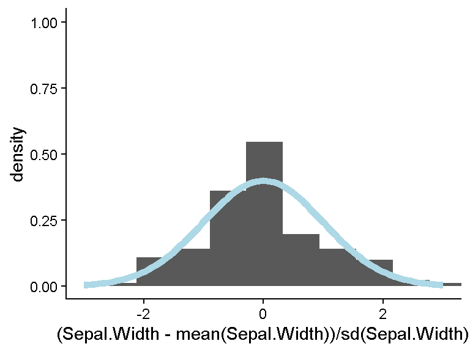
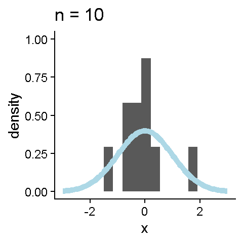
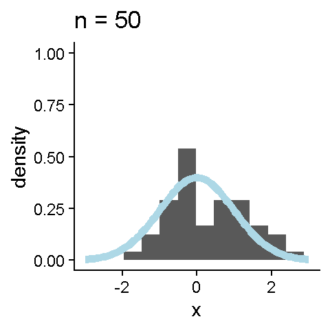
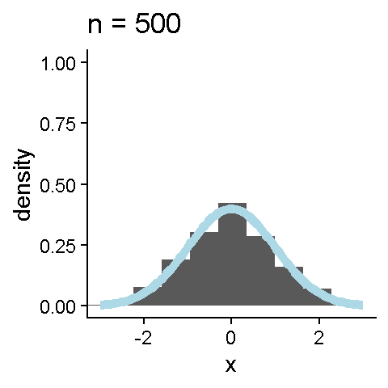

Z-Scores
PSYC 2020-A01 / PSYC 6022-A01 | 2025-09-12 | Lab 4
Jessica Helmer
Outline
- Assignment 2 Review
- Z-Scores
- Z-Scores in R
- Generating Data
- R Packages
- Reading Files
Learning objectives:
R: Packages, reading files, generating data
Statistics: Z-scores
Housekeeping
Extra Credit Reminder
- posit::conf(2025) is only a few days away!
Grading System Change
- This week, I switched Assignment 1 from being out of 100% to being out of 10 points. Nothing’s changed about the actual grade—just the format of it! Let me know if you have any questions.
Assignment 2 Review
Don’t forget to rename the assignment!
Overall really great work!
Z-Scores
To “Z-score” or “standardize” your data
○ Transform a variable such that the mean is zero and the standard deviation is one
○ Matches the mean and SD of a “standard” normal distribution, \(N(0, 1)\)



Z-Scores
Why standardize?
Puts variables on the same (interpretable) scale
Helps manage very large or very small numbers
Can compare across distributions
Gives information about location relative to the rest of the distribution
Z-Scores in R
Need to:
Take out the mean
Scale by the standard deviation
data$variable_z <- (data$variable - mean(data$variable)) / sd(data$variable)
Can check to make sure things look right
Generating Normal Data
Sometimes, we want to simulate data
○ Demonstration
○ Comparison
○ Sanity check
To generate data drawn from a normal distribution, we can use rnorm(n, mean, sd)
○
n = number of draws
○
mean = desired mean of distribution
○
sd = desired SD of distribution



Generating Normal Data
Probabilities of Normal Values
Within a normal distribution, we can check the probability of a given value and the value at a given probability
Probability of a Value
pnorm(q)
○
q = value (or vector of values)
Packages in R
Base R has a lot of great stuff, but packages made by the community have even more great stuff
Packages in R
Steps of using an R package:
1. Installing
install.packages(package)
○
package = (character) package name
Only have to do this once
Packages in R
Steps of using an R package:
2. Loading
library(package)
○
package = (not character) package name
At the top of your file
Better if you use many functions from that package in your script
Packages in R
Steps of using an R package:
3. Using
If you use library(), you can then call the function with just its name
Reading Files
So far, we’ve only used preloaded data in R
We need to learn how to import data into R!
1. Downloading
First, we need to download the file and move it to our working directory (or a folder within our working directory)
Reading Files
2. Reading
Base R
read() function family
Depends on your file type
read.csv(file) probably most common
○
file = name of or path to file
File in working directory
File in subfolder
Make sure to assign the data to a variable to keep it!
year winner_avg_speed total_distance winner winner_nationality
1 1903 25.68 2428 Maurice Garin France
2 1904 25.27 2420 Henri Cornet France
3 1905 27.11 2994 Louis Trousselier France
4 1906 24.46 4545 Rene Pottier France
5 1907 28.47 4488 Lucien Petit-Breton France
6 1908 28.74 4488 Lucien Petit-Breton France
starting_city
1 Paris
2 Paris
3 Paris
4 Paris
5 Paris
6 ParisLab 4 Assignment!
Don’t forget to sign up for posit::conf(2025) if you want to complete the extra credit assignment.